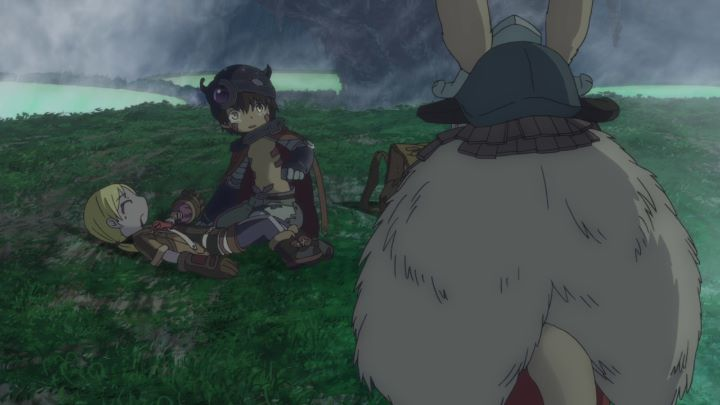

"Made in Abyss" was a surprise hit in 2017. The opening minutes of the first episode of the anime doesn't make a great first impression: the animation isn't great, the dialogue wasn't compelling, and it was difficult to discern what the enviornment was. But then there's a dramatic moment featuring a scary flying beast, and then the discovery of a robot boy: at this point, the opening credits appear as the camera cuts through a pair of children carrying the robot back to their town. It's Ghibli-esque in its presentation, specifically after the adventure movies like "Castle in the Sky," but with a greater sense of mystery and danger pulling things along. The original premise is compelling enough for the production to feel confident, and it's no wonder after that first episode that "Made in Abyss" would be widely considered one of the best anime of that year.Set in some alternate period, a massive bottomless crater mysteriously exists at the edge of the world. The surrounding land of the island containing the crater (nicknamed the "Abyss") has become a town of adventurers and scavengers, with a culture of their own, making a living by going splunking into the depths, collecting mysterious relics from some long-forgotten society. One orphanage has their children collect relics near the top of the Abyss around the age of 10, strictly observing them both for their safety and to collect income for their "business." Riko is one such orphan at this orphanage. She's an eager scanvanger, and dreams to upgrade her entry-level "red whistle" to become a "white whistle," the top level, like her mother (a legendary explorer who has been lost in the Abyss for over a decade). Riko is the one who discovers the robot boy, whom she names "Reg," seeing potential in his extendable metal arms and powerful canon. Reg retains mostly-human qualities, not remembering what he is or where he came from, easily fitting in with the other children but with a lot of questions about himself. Things change when a senior scavenger returns with a letter from Riko's mother, as well as her whistle: they still haven't found her or her body. But the letter contains new details about unexplored depths, including notes about coming across a being that looks suspiciously like Reg, as well as a message: "I'll be waiting at the bottom." That's all that Riko needs, and she escapes at night with her tools to head down to the bottom of the Abyss herself, a challenge no human has accomplished. Reg comes along, hoping to learn more about his origin, and his "abilities" will be invaluable. But there are reasons why the Abyss is so feared. Great flying monsters of all types come up to the surface, and the inner levels are teeming with them. The invisible atmospheric pressure also has an effect on humans that descend, getting stronger the deeper they go, and having a much stronger effect when going up rather than down: if one goes too far, they might be unable to come back, less they die in extreme pain, or else, "lose their humanity." Or so the rumors go. Regardless, adventurers cannot help but answer the call to discover what lays at the bottom. Riko's adventure begins, and she can't wait, but it won't be easy. "Made in Abyss" does a great job with portraying the appeal and mystery of the Abyss, as well as handling pacing throughout the story. Riko and Reg don't begin to descend until the end of episode 3. An iconic Rabbit-like character named Nanachi, used in promotional art and figurines more than the actual main characters, doesn't appear until episode 10. Yes, it might seem slow on paper (and yes, one or two episodes do feel like unnecessary filler), but at no point did the adventure seem less compelling. Taking its time also allows side characters to properly develop, making Riko's departure from her friends at the orphanage, or from key stop points on the way down, all the more difficult. Riko and everyone she meets are fully aware that Riko may never return up home, even if she survives. She can't help herself: she desparately wants to see her mother, and beyond that, can't help her curiosity. But it's clear that the decision isn't easy, for her or those she leaves behind.And my goodness, the show is gruesome at times, the one thing that prevents me from recommending the series to any age group. "Made in Abyss" doesn't shy away from the harsh realities of exploration, showing experiences that could occur to real people as they climb Mount Everest, or explore miles of uninhabited rainforest. Riko and Reg come across many types of dangers, from horrifying creatures (some of whom are seen feasting on other adult explorers), to sheer cliffsides, to poison, to injury, to the aforementioned effects of air pressure. The final arc (episode 10 to the double-length 13) is especailly hard to watch, containing some of the worst scenes. The show is every bit a warning as it is a celebration of the pursuit.  .... and did I mention these events are happening to children? Riko is said to be 12 years of age during the show. Due to the art style, even the adults don't look much older, but the series makes it clear that many of the adventurers really are just children. Yes, compared to the most violent action shows in anime, the show might not be as bad, but watching these events happen to kids makes it all the more horrifying. One can't help but wonder if the manga artist is a little sadistic...But despite it all, Riko and Reg also manage to be resourceful, especially when working together. The series is full of moments of Miko aweing at her surroundings, knowing she's one of the other surviving people to see them. They hunt and cook their own food, aiming for small, cute animals as easy and abundent prey. They take breaks to pee. Sometimes (in fear or pain) they pee themselves. Riko doesn't seem ashamed of bathing naked with Reg, due to her age and lifestyle of living at the orphanage. It's all kind of sweet and uplifting as a grounded-in-reality break between the darker moments... although again, a viewer might be attentive and question why such explicit content involving animated children would be made. Anyway, the series has an unusual sense of humor that made me smile more than I cringed. Production values for "Made in Abyss" vary. Direciton is confident when it needs to be, but generally is just workmanlike. Animation is also reasonable, but not great. Character designs are cute, round and young-looking, which is distinct from most anime (of this genre), but took a while for me to grow used to it. The highlight is the backgrounds, full of color and detail, with shots that portray the duo as specs in a vast landscape. There's a great sense of scale to the Abyss, with one particular haunting shot of the camera descending down from the top being reused to great effect. The monster designs are impressively varied, although the early episodes use a strange animation technique for them, as if using 3D CGI with an artisitic filter-overlay; it looks mysterious and scary, but doesn't fit in, especially when later episodes drop the style altogether. The English dub also took a while to get used to, struggling since most of the characters are meant to be played young. A couple characters don't sound right at all, but most of the cast is rather good, especially in later episodes. The music deserves some attention: it was compsed by Kevin Penkin, an Australian composer. The soundtrack he provides is contemporary and original, with a haunting male hymn comparable to "Ghost in the Shell" 's vocal tracks in how iconic it makes the music feel. Clearly the production team knows how important the music was: Sentai Filmworks' American Bluray release contains multiple behind-the-scenes interviews, the majority of which are dedicated to just the music (Penkin's Japanese is also impressively solid!). The "Made in Abyss" anime ends with a crucial development, but with the major mysteries left wide-open, and with hints of an over-arching scientist villain that might take the story down a more disappointing path that ignores the theme of adventure. Regardless, I desparately want more, and at the time of this writing, a sequel feature-film is planned, with possible future entries to come (the manga is still unfinished). The story could easily be limitless, like the Abyss itself, and like the heroes, I can't help but be drwan in to discover the truth at the bottom of it all.
- "Ani" More reviews can be found at : https://2danicritic.github.io/ Previous review: review_Lupin_the_Third_VS_Detective_Conan_-_The_Special Next review: review_Madoka_Magica_The_Movie_1_&_2_-_Beginnings,_Eternal